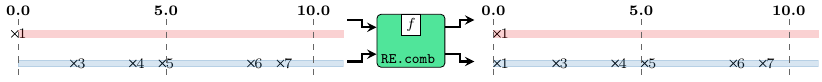
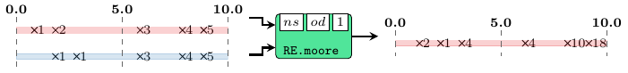

| Copyright | (c) George Ungureanu 2020 |
|---|---|
| License | BSD-style (see the file LICENSE) |
| Maintainer | ugeorge@kth.se |
| Stability | experimental |
| Portability | portable |
| Safe Haskell | Safe |
| Language | Haskell2010 |
| Extensions | PostfixOperators |
ForSyDe.Atom.MoC.DE.React
Description
This is an experimental library implementing the atoms and a set of specific
patterns for representing the discrete event model of computation
[Cassandras09]. One main source of inspiration for
this MoC execution model is the reactor model
[Lohstroh19], hence the abbreviation RE.
This module exports a more liberal interpretation of DE than
ForSyDe.Atom.MoC.DE, where events are considered non-persistent,
i.e. "instantaneous". Unambiguous behaviors for processes can be achieved by virtue
of pattern-matching agains the presence/absence of events at different input ports
at specific time instants (see API examples). This type of behavior implies a
dynamic/adaptive rate of consuming and producing events in streams, hence
internally each RE process is a detector-kernel pair along the lines of
ForSyDe.Atom.MoC.SDF.SADF, as shown in the picture below. In this representation
the detector monitors the tags of each incoming event and for each "earliest event"
it sets the execution context \(\Gamma\) dictating the event consumption rate of
the kernel, here implemented using RE atoms.
Useful pointers:
- ForSyDe.Atom contains general guidelines for using the API
- ForSyDe.Atom.MoC documents details about the internals of the MoC layer, the atoms and the basic structure of all process constructors as MoC patterns.
- ForSyDe.Atom.MoC.DE contains a conservative DE language where events are treated as persistent, each new event is triggering a new action seen on all outputs.
- the naming convention rules on how to interpret the function names based on their number of inputs and outputs.
Synopsis
- data RE t a where
- type Signal a = SignalBase TimeStamp a
- type SignalBase t a = Stream (RE t a)
- unit2 :: (Num t, Ord t) => ((t, a1), (t, a2)) -> (SignalBase t a1, SignalBase t a2)
- instant :: (Num t, Ord t) => a -> SignalBase t a
- until :: (Num t, Ord t) => t -> SignalBase t a -> SignalBase t a
- signal :: (Num t, Ord t) => [(t, a)] -> SignalBase t a
- checkSignal :: Ord t => Stream (RE t a) -> Stream (RE t a)
- readSignal :: (Num t, Ord t, Read t, Read a) => String -> SignalBase t a
- delay :: (Num t, Ord t) => t -> a -> SignalBase t a -> SignalBase t a
- delay' :: (Num t, Ord t) => SignalBase t a -> SignalBase t a -> SignalBase t a
- unsafeDelay :: (Num t, Ord t) => t -> SignalBase t a -> SignalBase t a
- comb22 :: (Num t, Ord t) => ([a1] -> [a2] -> ([b1], [b2])) -> SignalBase t a1 -> SignalBase t a2 -> (SignalBase t b1, SignalBase t b2)
- generate2 :: (Num t, Ord t) => ([b1] -> [b2] -> ([b1], [b2])) -> ((t, b1), (t, b2)) -> (SignalBase t b1, SignalBase t b2)
- state22 :: (Num t, Ord t) => (b1 -> b2 -> [a1] -> [a2] -> (b1, b2)) -> (b1, b2) -> SignalBase t a1 -> SignalBase t a2 -> (SignalBase t b1, SignalBase t b2)
- stated22 :: (Num t, Ord t) => (b1 -> b2 -> [a1] -> [a2] -> (b1, b2)) -> (b1, b2) -> SignalBase t a1 -> SignalBase t a2 -> (SignalBase t b1, SignalBase t b2)
- moore22 :: (Num t, Ord t) => (st -> [a1] -> [a2] -> st) -> (st -> ([b1], [b2])) -> st -> SignalBase t a1 -> SignalBase t a2 -> (SignalBase t b1, SignalBase t b2)
- mealy22 :: (Num t, Ord t) => (st -> [a1] -> [a2] -> st) -> (st -> [a1] -> [a2] -> ([b1], [b2])) -> st -> SignalBase t a1 -> SignalBase t a2 -> (SignalBase t b1, SignalBase t b2)
- syncAndHold2 :: (Num t, Ord t) => (b1, b2) -> SignalBase t b1 -> SignalBase t b2 -> (SignalBase t b1, SignalBase t b2)
- syncAndFill2 :: (Num t, Ord t) => (b1, b2) -> SignalBase t b1 -> SignalBase t b2 -> (SignalBase t b1, SignalBase t b2)
- syncAndObs11 :: (Num t, Ord t) => b2 -> SignalBase t b1 -> SignalBase t b2 -> (SignalBase t b1, SignalBase t b2)
- toDE2 :: (Functor f1, Functor f2) => f1 (RE t1 a1) -> f2 (RE t2 a2) -> (f1 (DE t1 a1), f2 (DE t2 a2))
- fromDE2 :: (Functor f1, Functor f2) => f1 (DE t1 a1) -> f2 (DE t2 a2) -> (f1 (RE t1 a1), f2 (RE t2 a2))
- toSYC2 :: (Num t, Ord t) => SignalBase t a -> SignalBase t b -> (Signal t, Signal a, Signal b)
- fromSYC2 :: (Num t, Ord t) => Signal t -> Signal a -> Signal b -> (SignalBase t a, SignalBase t b)
- embedSY22 :: (Num t, Ord t) => (Signal a1 -> Signal a2 -> (Signal b1, Signal b2)) -> SignalBase t a1 -> SignalBase t a2 -> (SignalBase t b1, SignalBase t b2)
- timer0 :: Signal ()
- timer :: TimeStamp -> Signal ()
- timer' :: TimeStamp -> TimeStamp -> Signal ()
- actionD :: TimeStamp -> Signal a -> Signal a
- states2inputs2 :: (Num t, Ord t) => (b3, b4) -> SignalBase t b3 -> SignalBase t b4 -> SignalBase t b1 -> SignalBase t b2 -> (SignalBase t b1, SignalBase t b2, SignalBase t b3, SignalBase t b4)
- reaction22 :: (Num t, Ord t) => ([a1] -> [a2] -> ([b1], [b2])) -> (SignalBase t a1, SignalBase t a2) -> (SignalBase t b1, SignalBase t b2)
Documentation
The definitions of the DE MoC are the same as the ones presented in the
ForSyDe.Atom.MoC.DE module, however this library implements a non-conservative
interpretation of this MoC, more appropriate to model timed computing
applicatios. In this sense signals are carrying "instant", non-persistent
events. The user is then responsible to define how the process should react in
case new events exist or not at any of the input ports, respectively if the
process reacts at all. This is done by pattern-matching the functions passed as
arguments: at any evaluation instant, a process passes to its function either
singleton lists [x] if new events exist at a particular input port for a
particular timestamp, respectively empty lists [] if no event has triggered the
respective port. This modeling style gives rise to two new very important
notions. For any process \(p(si^m)=so^n\) we say that:
- an input signal \(si_i\) is associated with a triggering port with respect to an output signal \(so_j\) if \(\forall e_i\in si_i, \exists e_o\in so_j\), i.e. every event observed on the input port associated with \(si_i\) triggers a reaction observed in \(so_j\). Using the ForSyDe.Atom.MoC.DE.React API we can model this along the lines of:
(...,so_j,...) = p f ... si_i ... where f ... [a_i] ... = (...,[b_j],...)
- an input signal \(si_i\) is associated with a non-triggering or observing port with respect to an output signal \(so_j\) if (forall e_iin si_i, nexists e_oin so_j), i.e. there exist events observed on the input port associated with \(si_i\) which do not trigger a reaction observable in \(so_j\). Using the ForSyDe.Atom.MoC.DE.React API we can model this along the lines of:
(...,so_j,...) = p f ... si_i ... where f ... [a_i] ... = (...,[],...)
The non-triggering behavior has deep implications and needs to be treated with
care especially when considering feedback loops, as it violates the
"non-cleaning" rule imposed by the host Stream. In the picture
below you see an example behavior of a RE process where both inputs are
triggering, and function \(\Sigma\) a b = [sum a + sum b].
In this example, if only the first signal is triggering, i.e.
f [a] b = [a + sum b] f _ _ = []
then
A conservative variant of the DE MoC is in ForSyDe.Atom.MoC.DE.React. Below are stated a few particularities of this DE MoC implementation:
- As compared to ForSyDe.Atom.MoC.DE this MoC is also one-sided, but time \(0\) is not necessarily the global start any longer, because there exists the notion of "absent" event. Tags in a signal still need to be strictly incremental, but a signal can start at any timestamp, including negative ones.
- since events are non-persistent, they are considered to be "lost", or
discarded after they happen, and a process is not allowed to "go back in time"
to retrieve them. Persistent behaviors can be modeled in this MoC with
e.g. buffer patterns, see
syncAndHold2. - a safe
delayis still considered one which both prepends-<-(i.e. generating a new value) and a phase shifts-&-(i.e. advancing time with a positive integer). However, since we are not restricted to start from global \(0\) any longer, we can also use anunsafeDelayvariant. This process is named so because it does not have a prepend behavior, which means that is never allowed to be part of any feedback datapath, otherwise it causes a simulation deadlock. - also because events are non-persistent, as a design choice, stateful
processes that involve feedback pattern (see
state22,stated22,moore22,mealy22) do not expose oscillating behavior, but rather an instantaneous one (i.e. they embed aSYbehavior). - since signal cleaning behavior is possible, it might cause unexpected
deadlocks, and should be avoided altogether. However, if this situation cannot
be avoided, the designer should take special care to enforce the following
rule: all ports involved in a feedback loop's datapath need to be
triggering, and pass through at lease one safe
delay. - any signal from outside needs to be sane ( \(T\) must be a total order) before being injected into a ForSyDe process network. Helper functions are equipped with sanity checkers. Inside a ForSyDe process network, transformations are monotonic, thus output signals are guaranteed to be sane.
- Since the execution of a process is dictated by the arrival of events, then
the
REatoms require the triggering information as a set of Booleans passed through the execution context: \[ \Gamma\vdash\alpha\rightarrow\beta = [\mathtt{Bool}]\times([\alpha]\rightarrow[\beta]) \] This context however does not need to be touched by the user of this API, but rather is taken care of by the detector pattern.
The reactor-like DE event, defined exactly like its DE
predecessor, and identifying a discrete event signal. The type of the tag system
needs to satisfy all of the three properties, as suggested by the type constraints
imposed on it:
- it needs to be a numerical type and every representable number needs to have an additive inverse.
- it needs to be unambiguously comparable (defines a total order).
- it needs to unambiguously define an equality operation.
Due to these properties not all numerical types can represent DE tags. A typical
example of inappropriate representation is Float.
Instances
| (Num t, Ord t, Eq t) => Functor (RE t) Source # | Allows for mapping of functions on a RE event. |
| (Num t, Ord t, Eq t) => Applicative (RE t) Source # | Allows for lifting functions on a pair of RE events. |
| (Num t, Ord t, Eq t) => MoC (RE t) Source # | |
Defined in ForSyDe.Atom.MoC.DE.React.Core Methods (-.-) :: Fun (RE t) a b -> Stream (RE t a) -> Stream (RE t b) Source # (-*-) :: Stream (RE t (Fun (RE t) a b)) -> Stream (RE t a) -> Stream (RE t b) Source # (-*) :: Stream (RE t (Ret (RE t) b)) -> Stream (RE t b) Source # (-<-) :: Stream (RE t a) -> Stream (RE t a) -> Stream (RE t a) Source # (-&-) :: Stream (RE t a) -> Stream (RE t a) -> Stream (RE t a) Source # | |
| (Num t, Ord t, Eq t, Eq t, Eq a) => Eq (RE t a) Source # | |
| (Read a, Read t, Num t, Ord t, Eq t, Eq t) => Read (RE t a) Source # | Reads the string of type |
| (Show t, Show a) => Show (RE t a) Source # | Shows the event with tag |
| (Plottable a, Show t, Real t, Fractional t, Num t, Ord t, Eq t) => Plot (SignalBase t a) Source # | For plotting |
Defined in ForSyDe.Atom.Utility.Plot Methods sample :: Float -> SignalBase t a -> Samples Source # sample' :: SignalBase t a -> Samples Source # takeUntil :: Float -> SignalBase t a -> SignalBase t a Source # getInfo :: SignalBase t a -> PInfo Source # | |
| type Ret (RE t) b Source # | |
Defined in ForSyDe.Atom.MoC.DE.React.Core | |
| type Fun (RE t) a b Source # | |
Defined in ForSyDe.Atom.MoC.DE.React.Core | |
Aliases & utilities
These are type synonyms and utilities provided for user convenience. They mainly concern the construction and usage of signals.
type Signal a = SignalBase TimeStamp a Source #
Convenience alias for a DE signal, where tags are represented using our exported
TimeStamp type.
type SignalBase t a = Stream (RE t a) Source #
Type synonym for a base DE signal as a stream of DE events, where the type of
tags has not been determined yet. In designs, it is advised to define a type alias
for signals, using an appropriate numerical type for tags, e.g.
import ForSyDe.Atom.MoC.DE.React hiding (Signal) -- hide provided alias, to use your own type Signal a = SignalBase Int a
unit2 :: (Num t, Ord t) => ((t, a1), (t, a2)) -> (SignalBase t a1, SignalBase t a2) Source #
Wraps a (tuple of) pair(s) (tag, value) into the equivalent unit signal(s). A
unit signal is a signal with one event with the period tag carrying value,
starting at tag 0.
Helpers: unit and unit[2-4].
instant :: (Num t, Ord t) => a -> SignalBase t a Source #
Creates a signal with an instant event at time 0.
until :: (Num t, Ord t) => t -> SignalBase t a -> SignalBase t a Source #
Takes the first part of the signal util a given timestamp. The last event of the resulting signal is at the given timestamp and carries the previous value. This utility is useful when plotting a signal, to specify the interval of plotting.
signal :: (Num t, Ord t) => [(t, a)] -> SignalBase t a Source #
Transforms a list of tuples (tag, value) into a RE signal. Checks if it is
well-formed.
checkSignal :: Ord t => Stream (RE t a) -> Stream (RE t a) Source #
Checks if a signal is well-formed or not, according to the RE MoC interpretation in ForSyDe-Atom.
readSignal :: (Num t, Ord t, Read t, Read a) => String -> SignalBase t a Source #
Reads a signal from a string and checks if it is well-formed. Like with the
read function from Prelude, you must specify the type of the signal.
>>>readSignal "{ 1@0, 2@2, 3@5, 4@7, 5@10 }" :: Signal Int{1@0s,2@2s,3@5s,4@7s,5@10s}>>>readSignal "{ 1@1, 2@2, 3@5, 4@7, 5@10 }" :: Signal Int{1@1s,2@2s,3@5s,4@7s,5@10s}
Incorrect usage (not covered by doctest):
λ> readSignal "{ 1@0, 2@2, 3@5, 4@10, 5@7 }" :: Signal Int
{1@0s,2@2s,3@5s*** Exception: [MoC.RE] malformed signalProcess Constuctors
These process constructors are re-interpretations of the atom patterns defined
in ForSyDe.Atom.MoC, using the reactor comb (see comb22) presented
above.
Simple
Arguments
| :: (Num t, Ord t) | |
| => t | time delay |
| -> a | initial value |
| -> SignalBase t a | input signal |
| -> SignalBase t a | output signal |
The delay process "delays" a signal with one event, (see the
delay pattern). Any delayed signal starts from global 0.
>>>let s = readSignal "{1@2, 2@3, 3@6, 4@8, 5@9}" :: Signal Int>>>delay 3 0 s{0@0s,1@5s,2@6s,3@9s,4@11s,5@12s}
Arguments
| :: (Num t, Ord t) | |
| => SignalBase t a | signal "borrowing" the initial event |
| -> SignalBase t a | input signal |
| -> SignalBase t a | output signal |
Similar to the previous, but this is the raw instantiation of the
delay pattern from ForSyDe.Atom.MoC. It "borrows" the first
event from one signal and appends it at the head of another signal.
>>>let s1 = readSignal "{1@(-1), 2@2, 3@6, 4@8, 5@9}" :: Signal Int>>>let s2 = readSignal "{3@2, 4@4, 5@5, 6@8, 7@9}" :: Signal Int>>>delay' s1 s2{1@-1s,3@5s,4@7s,5@8s,6@11s,7@12s}
Arguments
| :: (Num t, Ord t) | |
| => t | time delay |
| -> SignalBase t a | input signal |
| -> SignalBase t a | output signal |
This process "delays" only the tags of a signal. The "usafe" prefix is a warning
that it does not express prefix behavior (->-), which means that
in a feedback loop it will cause deadlock.
>>>let s = readSignal "{1@(-1), 2@2, 3@6, 4@8, 5@9}" :: Signal Int>>>unsafeDelay 3 s{1@2s,2@5s,3@9s,4@11s,5@12s}
Arguments
| :: (Num t, Ord t) | |
| => ([a1] -> [a2] -> ([b1], [b2])) | function on values |
| -> SignalBase t a1 | first input signal |
| -> SignalBase t a2 | second input signal |
| -> (SignalBase t b1, SignalBase t b2) | two output signals |
comb processes map a trigger-aware combinational function on signals and take
care of synchronization between input signals.
Constructors: comb[1-4][1-4].
>>>let s1 = instant 1>>>let s2 = readSignal "{1@0, 2@2, 3@6, 4@8, 5@9}" :: RE.Signal Int>>>comb11 (map (+1)) s2{2@0s,3@2s,4@6s,5@8s,6@9s}>>>let {f [a] [b] = ([a+b],[a-b]); f [a] [] = ([a],[a]); f [] [b] = ([],[b]); f [] [] = ([],[])}>>>comb22 f s1 s2({2@0s},{0@0s,2@2s,3@6s,4@8s,5@9s})

Arguments
| :: (Num t, Ord t) | |
| => ([b1] -> [b2] -> ([b1], [b2])) | function to generate next value |
| -> ((t, b1), (t, b2)) | kernel values tupled with their generation rate. |
| -> (SignalBase t b1, SignalBase t b2) | generated signals |
A signal generator based on a function and a kernel value.
Constructors: generate[1-3].
>>>let ns a b = (map (+1) a,map (+2) b)>>>let (s1,s2) = generate2 ns ((3,1),(1,2))>>>takeS 5 s1{1@0,2@3,3@6,4@9,5@12}>>>takeS 7 s2{2@0,4@1,6@2,8@3,10@4,12@5,14@6}
Arguments
| :: (Num t, Ord t) | |
| => (b1 -> b2 -> [a1] -> [a2] -> (b1, b2)) | next state function |
| -> (b1, b2) | initial state values |
| -> SignalBase t a1 | first input signal |
| -> SignalBase t a2 | second input signal |
| -> (SignalBase t b1, SignalBase t b2) | output signals |
state is a state machine without an output decoder, which exports the next
state. It reacts "instantaneously" with every triggering event, and has no
oscillation behavior. Internally it embeds a clocked SY process (see
state22).
Constructors: state[1-3][1-3].
>>>let s = readSignal "{1@1, 2@2, 3@6, 4@8, 5@9}" :: Signal Int>>>state11 (\s [a] -> s + a) 1 s{2@1s,4@2s,7@6s,11@8s,16@9s}

Arguments
| :: (Num t, Ord t) | |
| => (b1 -> b2 -> [a1] -> [a2] -> (b1, b2)) | next state function |
| -> (b1, b2) | initial state values |
| -> SignalBase t a1 | first input signal |
| -> SignalBase t a2 | second input signal |
| -> (SignalBase t b1, SignalBase t b2) | output signals |
state is a state machine without an output decoder, which exports the current
state. It reacts "instantaneously" with every triggering event, and has no
oscillation behavior. Internally it embeds a clocked SY process (see
stated22).
Constructors: stated[1-3][1-3].
>>>let s = readSignal "{1@1, 2@2, 3@6, 4@8, 5@9}" :: Signal Int>>>stated11 (\s [a] -> s + a) 1 s{1@1s,2@2s,4@6s,7@8s,11@9s}
Arguments
| :: (Num t, Ord t) | |
| => (st -> [a1] -> [a2] -> st) | next state function |
| -> (st -> ([b1], [b2])) | output decoder |
| -> st | initial state: tag and value |
| -> SignalBase t a1 | |
| -> SignalBase t a2 | |
| -> (SignalBase t b1, SignalBase t b2) |
moore processes model Moore state machines. It reacts "instantaneously" with
every triggering event, and has no oscillation behavior. Internally it embeds a
clocked SY process (see moore22).
Constructors: moore[1-3][1-3]
>>>let { ns s [a] [b] = s+a+b; ns s [] [b] = s; ns _ _ _ = 0 }>>>let od s = [s + 1]>>>let s1 = readSignal "{1@1, 2@2, 3@6, 4@8, 5@9}" :: Signal Int>>>let s2 = readSignal "{1@2, 1@3, 3@6, 4@8, 5@9}" :: Signal Int>>>moore21 ns od 1 s1 s2{2@1s,1@2s,4@3s,4@6s,10@8s,18@9s}

Arguments
| :: (Num t, Ord t) | |
| => (st -> [a1] -> [a2] -> st) | next state function |
| -> (st -> [a1] -> [a2] -> ([b1], [b2])) | outpt decoder |
| -> st | initial state: tag and value |
| -> SignalBase t a1 | |
| -> SignalBase t a2 | |
| -> (SignalBase t b1, SignalBase t b2) |
mealy processes model Mealy state machines. It reacts "instantaneously" with
every triggering event, and has no oscillation behavior. Internally it embeds a
clocked SY process (see mealy22).
Constructors: mealy[1-4][1-4]
>>>let { ns s [a] [b] = s+a+b; ns s [] [b] = s; ns _ _ _ = 0 }>>>let { od s [a] [b] = [s+a-b]; od s _ _ = [s] }>>>let s1 = readSignal "{1@1, 2@2, 3@6, 4@8, 5@9}" :: Signal Int>>>let s2 = readSignal "{1@2, 1@3, 3@6, 4@8, 5@9}" :: Signal Int>>>mealy21 ns od 1 s1 s2{1@1s,1@2s,3@3s,3@6s,9@8s,17@9s}
Arguments
| :: (Num t, Ord t) | |
| => (b1, b2) | initial value(s), if no previous present event exists. |
| -> SignalBase t b1 | |
| -> SignalBase t b2 | |
| -> (SignalBase t b1, SignalBase t b2) |
Synchronizes n signals and for each absent event at a synchronization point, it holds the previous non-absent one.
Constructors: syncAndHold[2-4]
>>>let s1 = readSignal "{1@1, 2@2, 3@6, 4@8, 5@9}" :: Signal Int>>>let s2 = readSignal "{3@2, 4@4, 5@5, 6@8, 7@9}" :: Signal Int>>>let (o1,o2) = syncAndHold2 (0,0) s1 s2>>>o1{1@1s,2@2s,2@4s,2@5s,3@6s,4@8s,5@9s}>>>o2{0@1s,3@2s,4@4s,5@5s,5@6s,6@8s,7@9s}
Arguments
| :: (Num t, Ord t) | |
| => (b1, b2) | initial value(s), if no previous present event exists. |
| -> SignalBase t b1 | |
| -> SignalBase t b2 | |
| -> (SignalBase t b1, SignalBase t b2) |
Synchronizes n signals and for each absent event at a synchronization point, it replaces it with an arbitrary user-defined value.
Constructors: syncAndFill[2-4]
>>>let s1 = readSignal "{1@1, 2@2, 3@6, 4@8, 5@9}" :: Signal Int>>>let s2 = readSignal "{3@2, 4@4, 5@5, 6@8, 7@9}" :: Signal Int>>>let (o1,o2) = syncAndFill2 (0,0) s1 s2>>>o1{1@1s,2@2s,0@4s,0@5s,3@6s,4@8s,5@9s}>>>o2{0@1s,3@2s,4@4s,5@5s,0@6s,6@8s,7@9s}
Arguments
| :: (Num t, Ord t) | |
| => b2 | initial value(s), if no previous present event exists. |
| -> SignalBase t b1 | |
| -> SignalBase t b2 | |
| -> (SignalBase t b1, SignalBase t b2) |
syncAndObs\(mn\) synchronizes \(m + n\) signals where the first \(m\) are
triggering signals and the last \(n\) non-triggering (observed) signals.
Constructors: syncAndObs11, syncAndObs21, syncAndObs31, syncAndObs12, syncAndObs22, syncAndObs13.
>>>let s1 = readSignal "{1@1, 2@2, 3@6, 4@8, 5@9}" :: Signal Int>>>let s2 = readSignal "{3@2, 4@4, 5@5, 6@8, 7@9}" :: Signal Int>>>let (o1,o2) = syncAndObs11 0 s1 s2>>>o1{1@1s,2@2s,3@6s,4@8s,5@9s}>>>o2{0@1s,3@2s,4@4s,5@5s,5@6s,6@8s,7@9s}
Interfaces
toDE2 :: (Functor f1, Functor f2) => f1 (RE t1 a1) -> f2 (RE t2 a2) -> (f1 (DE t1 a1), f2 (DE t2 a2)) Source #
Syntax-preserving transformation to the original conservative ForSyDe.Atom.MoC.DE MoC. It is not semantics-preserving because "instant" events are re-interpreted as "persistent".
OBS: all input signals need to start from global time 0.
>>>let s1 = RE.readSignal "{1@0, 2@2, 3@6, 4@8, 5@9}" :: RE.Signal Int>>>let s2 = RE.readSignal "{1@0, 2@3, 3@4, 4@8, 5@10}" :: RE.Signal Int>>>toDE2 s1 s2({1@0s,2@2s,3@6s,4@8s,5@9s},{1@0s,2@3s,3@4s,4@8s,5@10s})
fromDE2 :: (Functor f1, Functor f2) => f1 (DE t1 a1) -> f2 (DE t2 a2) -> (f1 (RE t1 a1), f2 (RE t2 a2)) Source #
Syntax-preserving transformation from the original conservative ForSyDe.Atom.MoC.DE MoC. It is not semantics-preserving because "persistent" events are re-interpreted as "instant".
OBS: all input signals will start at global time 0.
>>>let s1 = DE.readSignal "{1@0, 2@2, 3@6, 4@8, 5@9}" :: DE.Signal Int>>>let s2 = DE.readSignal "{1@0, 2@3, 3@4, 4@8, 5@10}" :: DE.Signal Int>>>fromDE2 s1 s2({1@0s,2@2s,3@6s,4@8s,5@9s},{1@0s,2@3s,3@4s,4@8s,5@10s})
Arguments
| :: (Num t, Ord t) | |
| => SignalBase t a | first input DE signal |
| -> SignalBase t b | second input DE signal |
| -> (Signal t, Signal a, Signal b) | signal carrying timestamps tupled with the two output
|
Semantics-preserving translation to ForSyDe.Atom.MoC.SY.Clocked signals. At any
synchronization instant, triggering events are wrapped into a
Prst behavior, whereas absent ones are represented as
Abst. The output signals are tupled with a (pure)
SY signal carrying the timestamps of the synchronization
points.
OBS: check the documentation of ForSyDe.Atom.MoC.SY.Clocked for legal multi-clock rate interactions.
Constructors: toSY[1-4]
>>>let s1 = RE.instant 1>>>let s2 = RE.readSignal "{1@1, 2@2, 3@6, 4@8, 5@9}" :: RE.Signal Int>>>toSYC2 s1 s2({0s,1s,2s,6s,8s,9s},{1,⟂,⟂,⟂,⟂,⟂},{⟂,1,2,3,4,5})
Arguments
| :: (Num t, Ord t) | |
| => Signal t | SY signal carrying |
| -> Signal a | first input SYC signal |
| -> Signal b | second input SYC signal |
| -> (SignalBase t a, SignalBase t b) | two output |
Semantics-preserving translation from ForSyDe.Atom.MoC.SY.Clocked signals.
Prst events are propagated, whereas
Abst ones are cleaned from the output. The first signal
needs to be a (pure) SY signal describing the timestamps of
the synchronization points.
OBS: This process has cleaning behavior. It needs to be avoided from the datapath of any feedback loop!
Constructors: fromSY, fromSY2, fromSY3, fromSY4.
>>>let s1 = SY.signal [0,3,4,6,9] :: SY.Signal DE.TimeStamp>>>let s2 = SY.signal [Prst 1,Prst 2,Abst,Prst 4,Prst 5]>>>fromSYC1 s1 s2{1@0s,2@3s,4@6s,5@9s}
Arguments
| :: (Num t, Ord t) | |
| => (Signal a1 -> Signal a2 -> (Signal b1, Signal b2)) |
|
| -> SignalBase t a1 | first input DE signal |
| -> SignalBase t a2 | second input DE signal |
| -> (SignalBase t b1, SignalBase t b2) | two output |
Embeds a ForSyDe.Atom.MoC.SY.Clocked process inside a RE
environment. Internally, it synchronizes the input signals, translates them to
clocked SY (see toSYC2), feeds them to a SY process and translates the result
back to RE (see fromSYC2) using the same input tags. Seen
from outside, this process behaves like a RE process with "instantaneous response".
Constructors: embedSY[1-4][1-4].
For the following example, see the difference between its output
and the one of stated22
>>>let s1 = readSignal "{1@0, 2@2, 3@6, 4@8, 5@9}" :: RE.Signal Int>>>let s2 = readSignal "{1@0, 2@2, 3@6, 4@8, 5@9}" :: RE.Signal Int>>>embedSY21 (SYC.stated21 (\s a b -> a + b - s) 1) s1 s2{1@0s,1@2s,3@6s,3@8s,5@9s}
OBS: according to the ForSyDe.Atom.MoC.SY.Clocked MoC all inputs signals need to be sichronized (i.e. have the same clock rate), otherwise their interaction is illegal.
> let s1 = readSignal "{1@0, 2@2, 3@6, 4@8, 5@9}" :: RE.Signal Int
> let s2 = readSignal "{1@0, 2@2, 3@7, 4@8, 5@9}" :: RE.Signal Int
> embedSY21 (SYC.stated21 (\s a b -> a + b - s) 1) s1 s2
{1@0s,1@2s,3@6s,*** Exception: [ExB.Absent] Illegal occurrence of an absent and present eventLingua Franca constructs
This library also exports functions and helpers to re-create reactor networks
from Lingua Franca (LF) language
[Lohstroh19], as ForSyDe process
networks. Basically each expression in the LF language is given an equivalent
ForSyDe RE construct. Due to fundamental differences between the two languages
(LF being a parsed language and ForSyDe an EDSL hosted on the strictly-typed pure
functional programming language Haskell) the syntax and user experience in
general is quite different between the two languages. The scope of this library
is merely to provide an (executable) behavioral model of LF reactors for study
purposes rather than imitate/replace LF. In particular each construct in the LF
language is associated with a ForSyDe process constructor, and thus reactor
definitions in LF are built as specific composite processes in ForSyDe.
According to the Language Reference wiki
this is how a reactor is defined in LF:
reactor name (parameters) {
state declarations
input declarations
output declarations
timer declarations
action declarations
reaction declarations
...
}Here is how a reactor would be defined as a process network/composite process using this library, along the lines of:
reactorName :: ParamTypes -> InputSignalTypes ... -> OutputSignalTypes ...
reactorName param inputS ... = (outputS, ...)
where
stateS = stateP nextStateF initV {inputS|timerS|actionS} ...
timerS = clockP
actionS = actionP {reactionS|other_actionS} ...
reactionS = reactionP reactF reactInS
where syncS = statesXinputsY initV stateS ... {inputS|timerS|actionS} ...The pseudo-code above suggests the syntax and what kind of constructs a designer would use, to make a rough association between the ForSyDe-Reactors style and the LF-Reactors style. As with every functional program, the ForSyDe-Reactors processes are defined in an "equational" style. The elements in the pseudo-code denote:
- words between
{...|...}represents what different choices of input/output arguments; - words with the
Ssuffix suggest that these identifiers are signals; words withPsuffix suggest that these identifiers are processes or process constructors; words withFsuffix suggest that these are functions, andVvalues respectively; statePare state modifiers, and should be stateful process constructors, seestate22,stated22moore22,mealy22;clockPis a clock generator process, seetimer0,timer,timer';actionPmight be an action "delayer" if the action is to be delayed, or simply a name binding if it is not to be delayed;reactionPis a combinational process constructor (see thereaction22aliases), which operates on a set of synchronized signals, using thestatesXinputsYutility (seestates2inputs2). This utility manipulates the different signals inside a reactor as to denote which originate from internal state processes (i.e. values are persistent until the next state modifier action occurs) and other/input actions (i.e. events are instant, and values are lost after the event is consumed).
Here is a simple example of how a LF reactor can be translated using this library. Consider this LF code:
reactor reactor1 (period:time) {
input x:int;
output y:int;
timer t(period);
state count:int(0);
action a:int;
reaction(t) -> a {=
(self->count)++;
schedule(a, MSEC(200), self->count)
=}
reaction(a,x) -> y {=
set(y, a + x)
=}
}The ForSyDe equivalent model for reactor1 would be:
reactor1 :: TimeStamp -> Signal Int -> Signal Int
reactor1 period x = y
where
t = timer period
count = state11 (\s _ -> s + 1) 0 t
a = actionD (milisec 200) count
y = reaction21 (\i1 i2 -> [sum i1 + sum i2])
$ states1inputs1 0 a xExecuting the above reactor with a test input signal in the ghci interpreter
gives you the output:
>>>let s2 = read "{1@0,2@3,3@6,4@10,5@13}" :: Signal Int>>>simulate 11.2 $ reactor1 1 s20s 1 0.2s 1 1.2s 2 2.2s 3 3s 5 3.2s 4 4.2s 5 5.2s 6 6s 9 6.2s 7 7.2s 8 8.2s 9 9.2s 10 10s 14 10.2s 11 11.2s 12
Clock Generators
The equivalent of a timer set to period 0 in LF. It triggers once at the
beginning of the execution and then it never triggers again.
Like timer, but you can specify an initial phase.
Delayed Actions
Non-delayed actions are not provided, because, as seen in the example above, they are simply (name bindings to) signals. Consequently delayed/scheduled actions are delayed signals in ForSyDe.
actionD :: TimeStamp -> Signal a -> Signal a Source #
A delayed action is simply a delayed signal. In ForSyDe the initial value is
mandatory. If there is a notion of unknown, this has to be captured by the
domain a of the event (i.e. "one layer below").
Reactions
Reactions are ForSyDe combinational process constructors, having both
triggering and non-triggering (observing) inputs. Due to the current
implementation of the host RE MoC, the inputs of a reaction need to come from a
statesXinputsY utility, which tells which signals are persistent
(i.e. originating from stateful processes/reactions) or instantaneous (originatig
from non-stateful reactions or inputs).
Note: The equivalent of the is_present construct in LF can be expressed
using pattern-matching on process function arguments (see comb22).
states2inputs2 :: (Num t, Ord t) => (b3, b4) -> SignalBase t b3 -> SignalBase t b4 -> SignalBase t b1 -> SignalBase t b2 -> (SignalBase t b1, SignalBase t b2, SignalBase t b3, SignalBase t b4) Source #
Alias for syncAndObs11. Denotes which actions come from states (with persistent
values) and which come from other actions or inputs (instantaneous).
>>>let sts = read "{1@0,2@3,3@6,4@10,5@13}" :: Signal Int>>>let ins = read "{1@3,2@4,3@5,4@6,5@13}" :: Signal Int>>>states1inputs1 0 sts ins({1@3s,2@4s,3@5s,4@6s,5@13s},{1@0s,2@3s,2@4s,2@5s,3@6s,4@10s,5@13s})
reaction22 :: (Num t, Ord t) => ([a1] -> [a2] -> ([b1], [b2])) -> (SignalBase t a1, SignalBase t a2) -> (SignalBase t b1, SignalBase t b2) Source #
Alias for comb22, tupled version, that can be chained directly from a
statesXinputsY "utility", see states2inputs2.
>>>let sts = read "{1@0,2@3,3@6,4@10,5@13}" :: Signal Int>>>let ins = read "{1@3,2@4,3@5,4@6,5@13}" :: Signal Int>>>reaction21 (\a b -> [sum a + sum b]) $ states1inputs1 0 sts ins{1@0s,3@3s,4@4s,5@5s,7@6s,4@10s,10@13s}